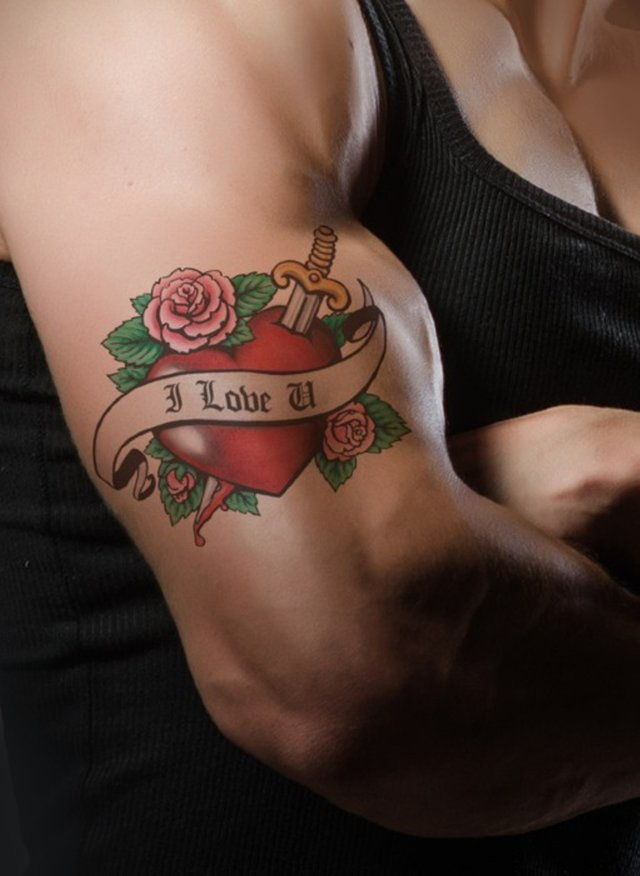
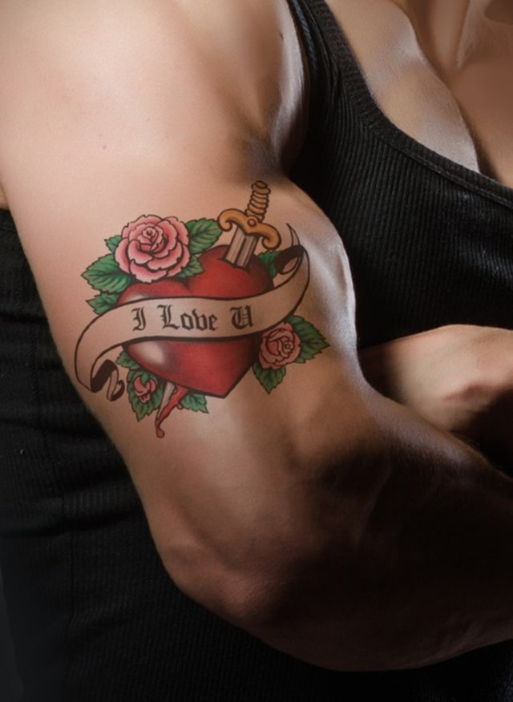

rumble
inspired by greatness!


 



Love comes quietly.
Maverick O.
All our dreams can come true, if we have the courage to pursue them.
Walt Disney
The secret of getting ahead is getting started.
Mark Twain
I’ve missed more than 9,000 shots in my career. I’ve lost almost 300 games. 26 times I’ve been trusted to take the game winning shot and missed. I’ve failed over and over and over again in my life and that is why I succeed.
Michael Jordan
The best time to plant a tree was 20 years ago. The second best time is now.
Chinese Proverb
Only the paranoid survive.
Andy Grove
It’s hard to beat a person who never gives up.
Babe Ruth
I wake up every morning and think to myself, ‘how far can I push this company in the next 24 hours.
Leah Busque
If people are doubting how far you can go, go so far that you can’t hear them anymore.
Michele Ruiz
We need to accept that we won’t always make the right decisions, that we’ll screw up royally sometimes – understanding that failure is not the opposite of success, it’s part of success.
Arianna Huffington
Write it. Shoot it. Publish it. Crochet it, sauté it, whatever. MAKE.
Joss Whedon
You’ve gotta dance like there’s nobody watching, love like you’ll never be hurt, sing like there’s nobody listening, and live like it’s heaven on earth.
William W. Purkey
Fairy tales are more than true: not because they tell us that dragons exist, but because they tell us that dragons can be beaten.
Neil Gaiman
Everything you can imagine is real.
Pablo Picasso
When one door of happiness closes, another opens; but often we look so long at the closed door that we do not see the one which has been opened for us.
Helen Keller
Do one thing every day that scares you.
Eleanor Roosevelt
It’s no use going back to yesterday, because I was a different person then.
Lewis Carroll
Smart people learn from everything and everyone, average people from their experiences, stupid people already have all the answers.
Socrates
Do what you feel in your heart to be right – for you’ll be criticized anyway.
Eleanor Roosevelt
Happiness is not something ready made. It comes from your own actions.
Dalai Lama XIV
Whatever you are, be a good one.
Abraham Lincoln
The same boiling water that softens the potato hardens the egg. It’s what you’re made of. Not the circumstances.
‐ Unknown
If we have the attitude that it’s going to be a great day it usually is.
Catherine Pulsifier
You can either experience the pain of discipline or the pain of regret. The choice is yours.
‐ Unknown
Impossible is just an opinion.
Paulo Coelho
Your passion is waiting for your courage to catch up.
Isabelle Lafleche
Magic is believing in yourself. If you can make that happen, you can make anything happen.
Johann Wolfgang Von Goethe
If something is important enough, even if the odds are stacked against you, you should still do it.
Elon Musk
Hold the vision, trust the process.
‐ Unknown
Don’t be afraid to give up the good to go for the great.
John D. Rockefeller
People who wonder if the glass is half empty or full miss the point. The glass is refillable.
‐ Unknown
No one is to blame for your future situation but yourself. If you want to be successful, then become “Successful.
Jaymin Shah
Things may come to those who wait, but only the things left by those who hustle.
Abraham Lincoln
Everything comes to him who hustles while he waits.
Thomas Edison
Every sucessful person in the world is a hustler one way or another. We all hustle to get where we need to be. Only a fool would sit around and wait on another man to feed him.
K’wan
Invest in your dreams. Grind now. Shine later.
- Unknown
Hustlers don’t sleep, they nap.
- Unknown
Greatness only comes before hustle in the dictionary.
Ross Simmonds
Without hustle, talent will only carry you so far.
Gary Vaynerchuk
Work like there is someone working twenty four hours a day to take it away from you.
Mark Cuban
Hustle in silence and let your success make the noise.
- Unknown
We are what we repeatedly do. Excellence, then, is not an act, but a habit.
Aristotle
If you’re offered a seat on a rocket ship, don’t ask what seat! Just get on.
Sheryl Sandberg
I always did something I was a little not ready to do. I think that’s how you grow. When there’s that moment of ‘Wow, I’m not really sure I can do this,’ and you push through those moments, that’s when you have a breakthrough.
Marissa Mayer
If you hear a voice within you say ‘you cannot paint,’ then by all means paint and that voice will be silenced.
Vincent Van Gogh
How wonderful it is that nobody need wait a single moment before starting to improve the world.
Anne Frank
Some people want it to happen, some wish it would happen, others make it happen.
Michael Jordan
Great things are done by a series of small things brought together
Vincent Van Gogh
If you hire people just because they can do a job, they’ll work for your money. But if you hire people who believe what you believe, they’ll work for you with blood and sweat and tears.
Simon Sinek
Very often, a change of self is needed more than a change of scene.
A.C. Benson
Leaders can let you fail and yet not let you be a failure.
Stanley McChrystal
It’s not the load that breaks you down, it’s the way you carry it.
Lou Holtz
The hard days are what make you stronger.
Aly Raisman
If you believe it’ll work out, you’ll see opportunities. If you don’t believe it’ll work out, you’ll see obstacles.
Wayne Dyer
You can waste your lives drawing lines. Or you can live your life crossing them.
Shonda Rhimes
Keep your eyes on the stars, and your feet on the ground.
Theodore Roosevelt
You’ve got to get up every morning with determination if you’re going to go to bed with satisfaction.
George Lorimer
I now tried a new hypothesis: It was possible that I was more in charge of my happiness than I was allowing myself to be.
Michelle Obama
In a gentle way, you can shake the world.
Mahatma Gandhi
If opportunity doesn’t knock, build a door.
Kurt Cobain
Don’t be pushed around by the fears in your mind. Be led by the dreams in your heart.
Roy T. Bennett
Work hard in silence, let your success be the noise.
Frank Ocean
Hard work beats talent when talent doesn’t work hard.
Tim Notke
If everything seems to be under control, you’re not going fast enough.
Mario Andretti
Opportunity is missed by most people because it is dressed in overalls and looks like work.
Thomas Edison
The only difference between ordinary and extraordinary is that little extra.
Jimmy Johnson
The best way to appreciate your job is to imagine yourself without one.
Oscar Wilde
Unsuccessful people make their decisions based on their current situations. Successful people make their decisions based on where they want to be.
Benjamin Hardy
Never stop doing your best just because someone doesn’t give you credit.
Kamari aka Lyrikal
Work hard, be kind, and amazing things will happen.
Conan O’Brien
The miracle is not that we do this work, but that we are happy to do it.
Mother Teresa
Never give up on a dream just because of the time it will take to accomplish it. The time will pass anyway.
Earl Nightingale
If you work on something a little bit every day, you end up with something that is massive.
Kenneth Goldsmith
The big secret in life is that there is no secret. Whatever your goal, you can get there if you’re willing to work.
Oprah Winfrey
If you cannot do great things, do small things in a great way.
Napoleon Hill
Never allow a person to tell you no who doesn’t have the power to say yes.
Eleanor Roosevelt
At any given moment you have the power to say: this is not how the story is going to end.
‐ Unknown
Amateurs sit around and wait for inspiration. The rest of us just get up and go to work.
Stephen King
Nothing will work unless you do.
Maya Angelou
Sometimes when you’re in a dark place you think you’ve been buried but you’ve actually been planted.
Christine Caine
Don’t limit your challenges. Challenge your limits.
‐ Unknown
Whenever you find yourself doubting how far you can go, just remember how far you have come.
‐ Unknown
Everyone has inside them a piece of good news. The good news is you don’t know how great you can be! How much you can love! What you can accomplish! And what your potential is.
Anne Frank
Some luck lies in not getting what you thought you wanted but getting what you have, which once you have got it you may be smart enough to see is what you would have wanted had you known.
Garrison Keillor
When written in Chinese the word “crisis” is composed of two characters – one represents danger and the other represents opportunity.
John F Kennedy
Good. Better. Best. Never let it rest. ‘Til your good is better and your better is best.
St. Jerome
In the middle of every difficulty lies opportunity.
Albert Einstein
Start where you are. Use what you have. Do what you can.
Arthur Ashe
Go the extra mile. It’s never crowded there.
Dr. Wayne D. Dyer
Keep your face always toward the sunshine – and shadows will fall behind you.
Walt Whitman
What defines us is how well we rise after falling.
Lionel from Maid in Manhattan Movie
H.O.P.E. = Hold On. Pain Ends.
Make each day your masterpiece.
John Wooden
Wherever you go, go with all your heart
Confucius
Turn your wounds into wisdom.
Oprah
We can do anything we want to if we stick to it long enough.
Helen Keller
Begin anywhere. We can do anything we want to if we stick to it long enough.
John Cage
Twenty years from now you’ll be more disappointed by the things you did not do than the ones you did.
Mark Twain
I am thankful for all of those who said NO to me. It’s because of them I’m doing it myself.
Wayne W. Dyer
It’s okay to outgrow people who don’t grow. Grow tall anyways.
When you feel like giving up just remember that there are a lot of people you still have to prove wrong.
The world is full of nice people. If you can’t find one, be one.
Nishan Panwar
Believe in yourself, take on your challenges, dig deep within yourself to conquer fears. Never let anyone bring you down. You got to keep going.
Chantal Sutherland
A walk to a nearby park may give you more energy and inspiration in life than spending two hours in front of a screen.
Tsang Lindsay
If you can’t do anything about it then let it go. Don’t be a prisoner to things you can’t change.
Tony Gaskins
You can’t go back and change the beginning, but you can start where you are and change the ending.
C.S. Lewis
Yesterday I was clever, so I wanted to change the world. Today I am wise, so I am changing myself.
Rumi
I can and I will. Watch me.
Carrie Green
Try not to become a man of success, but rather become a man of value.
Albert Einstein
A winner is a dreamer who never gives up.
Nelson Mandela
If you don’t have a competitive advantage, don’t compete.
Jack Welch
The only thing standing in the way between you and your goal is the story you keep telling yourself as to why you can’t achieve it.
Jordan Belfort
What is life without a little risk?
J.K. Rowling
If it’s a good idea, go ahead and do it. It’s much easier to apologize than it is to get permission.
Grace Hopper
I attribute my success to this: I never gave or took an excuse.
Florence Nightingale
The question isn’t who is going to let me; it’s who is going to stop me.
Ayn Rand
A surplus of effort could overcome a deficit of confidence.
Sonia Sotomayer
And, when you want something, all the universe conspires in helping you to achieve it.
Paulo Coelho, The Alchemist
Your playing small does not serve the world. There is nothing enlightened about shrinking so that other people won’t feel insecure around you. We are all meant to shine, as children do.
Marianne Williamson
Don’t think or judge, just listen.
Sarah Dessen, Just Listen
I can be changed by what happens to me. But I refuse to be reduced by it.
Maya Angelou, Letter to My Daughter
Darkness cannot drive out darkness: only light can do that. Hate cannot drive out hate: only love can do that.
Martin Luther King Jr.
You have brains in your head. You have feet in your shoes. You can steer yourself any direction you choose. You’re on your own. And you know what you know. And YOU are the one who’ll decide where to go…
Dr. Seuss, Oh, the Places You’ll Go!.
It’s the possibility of having a dream come true that makes life interesting.
Paulo Coelho, The Alchemist
There is some good in this world, and it’s worth fighting for.
J.R.R. Tolkien, The Two Towers
Learn to light a candle in the darkest moments of someone’s life. Be the light that helps others see; it is what gives life its deepest significance.
Roy T. Bennett, The Light in the Heart
"Atticus, he was real nice.” “Most people are, Scout, when you finally see them.
Harper Lee, To Kill a Mockingbird
Oh yes, the past can hurt. But the way I see it, you can either run from it or learn from it.
The Lion King
Life moves pretty fast. If you don’t stop and look around once in a while, you could miss it.
Ferris Bueller
No one has ever made a difference by being like everyone else.
The Greatest Showman
Spend a little more time trying to make something of yourself and a little less time trying to impress people.
The Breakfast Club
The problem is not the problem. The problem is your attitude about the problem.
Pirates of the Caribbean
You’ll have bad times, but it’ll always wake you up to the good stuff you weren’t paying attention to.
Good Will Hunting
“And when you get the choice to sit it out or dance… I hope you dance.” – I Hope You Dance, Lee Ann Womack
GLee Ann Womack
Just because it burns doesn’t mean you’re gonna die you’ve gotta get up and try.
Try, P!nk
Life’s a game made for everyone and love is the prize
GWake Me Up, Avicii
You’ll have bad times, but it’ll always wake you up to the good stuff you weren’t paying attention to.
Good Will Hunting
You’ll have bad times, but it’ll always wake you up to the good stuff you weren’t paying attention to.
Good Will Hunting
Every day women and men become legends
Glory, John Legend and Common
On my own I will just create and if it works, it works. And if it doesn’t, I’ll just create something else. I don’t have any limitations on what I think I could do or be.
Oprah Winfrey
We realize the importance of our voices only when we are silenced.
Malala Yousafzai
We need to accept that we won’t always make the right decisions, that we’ll screw up royally sometimes – understanding that failure is not the opposite of success, it’s part of success.
Arianna Huffington
Don’t compromise yourself. You’re all you’ve got.
Janis Joplin
When something I can’t control happens, I ask myself: Where is the hidden gift? Where is the positive in this?
Sara Blakely
Doubt is a killer. You just have to know who you are and what you stand for.
Jennifer Lopez
Be a first rate version of yourself, not a second rate version of someone else.
Judy Garland
Learn from the mistakes of others. You can’t live long enough to make them all yourself.
Eleanor Roosevelt
Done is better than perfect.
Sheryl Sandberg
If your dreams don’t scare you, they are too small.
Richard Branson
Today is your opportunity to build the tomorrow you want.
Ken Poirot
What hurts you blesses you.
Rumi
Nothing is stronger than a broken man rebuilding himself.
‐ Unknown
I always thought it was me against the world and then one day I realized it’s just me against me.
Kendrick Lamar
A man is not finished when he is defeated. He is finished when he quits.
Richard Nixon
The world is changed by your example, not by your opinion.
Paulo Coelho
I’m not in this world to live up to your expectations and you’re not in this world to live up to mine.
Bruce Lee
What’s right is what’s left if you do everything else wrong.
Robin Williams
Dream beautiful dreams, and then work to make those dreams come true.
Spencer W. Kimball
If you think someone could use a friend. Be one.
- Unknown
You don’t have to be perfect to be amazing.
- Unknown
Successful people are not gifted; they just work hard, then succeed on purpose.
G.K. Nielson
Don’t watch the clock; do what it does. Keep going.
Sam Levenson
Don’t watch the clock; do what it does. Keep going.
Sam Levenson
You can’t have a million dollar dream on a minimum wage work ethic.
- Unknown
You must do the kind of things you think you cannot do.
Eleanor Roosevelt
It’s not what you do once in a while it’s what you do day in and day out that makes the difference.
Jenny Craig
Falling down is how we grow. Staying down is how we die.
Brian Vaszily
Wealth isn’t about having a lot of money it’s about having a lot of options.
Chris Rock
There may be people that have more talent than you, but there’s no excuse for anyone to work harder than you.
Derek Jeter
Always be careful when you follow the masses. Sometimes the m is silent.
- Unknown
If you fall I'll be there
- Floor
When Plan “A” doesn’t work, don’t worry, you still have 25 more letters to go through.
- Unknown
If you think you’re too small to make a difference, try sleeping with a mosquito.
Dalai Lama
A diamond is merely a lump of coal that did well under pressure.
- Unknown
You could rattle the stars,” she whispered. “You could do anything, if only you dared. And deep down, you know it, too. That’s what scares you most.
Sarah J. Maas
It is only when we take chances, when our lives improve. The initial and the most difficult risk that we need to take is to become honest.
Walter Anderson
The adventure of life is to learn. The purpose of life is to grow. The nature of life is to change. The challenge of life is to overcome. The essence of life is to care. The opportunity of like is to serve. The secret of life is to dare. The spice of life is to befriend. The beauty of life is to give.
William Arthur Ward
When you know your worth, no one can make you feel worthless.
- Unknown
If you’ve never eaten while crying you don’t know what life tastes like.
Johann Wolfgang von Goethe
If you judge people, you have no time to love them.
Mother Teresa
Once you do know what the question actually is, you’ll know what the answer means.
Douglas Adams
The two most important days in your life are the day you’re born and the day you find out why.
Mark Twain
Nothing ever goes away until it teaches us what we need to know.
Pema Chodron
We can see through others only when we can see through ourselves.
Bruce Lee
You don’t get paid for the hour. You get paid for the value you bring to the hour.
Jim Rohn
Be an Encourager: When you encourage others, you boost their self-esteem, enhance their self-confidence, make them work harder, lift their spirits and make them successful in their endeavors. Encouragement goes straight to the heart and is always available. Be an encourager. Always.
Roy T. Bennett
Remember, you have been criticizing yourself for years and it hasn’t worked. Try approving of yourself and see what happens.
Louise L Hay
Work hard and don’t give up hope. Be open to criticism and keep learning. Surround yourself with happy, warm and genuine people.
Tena Desae
Stay true to yourself, yet always be open to learn. Work hard, and never give up on your dreams, even when nobody else believes they can come true but you. These are not cliches but real tools you need no matter what you do in life to stay focused on your path.
Phillip Sweet
Success isn’t always about greatness. It’s about consistency. Consistent hard work leads to success. Greatness will come.
Dwayne Johnson
One, remember to look up at the stars and not down at your feet. Two, never give up work. Work gives you meaning and purpose and life is empty without it. Three, if you are lucky enough to find love, remember it is there and don’t throw it away.
Stephen Hawking
Some women choose to follow men, and some women choose to follow their dreams. If you’re wondering which way to go, remember that your career will never wake up and tell you that it doesn’t love you anymore.
Lady Gaga
Read, read, read. Read everything — trash, classics, good and bad, and see how they do it. Just like a carpenter who works as an apprentice and studies the master. Read! You’ll absorb it. Then write. If it’s good, you’ll find out. If it’s not, throw it out of the window.
William Faulkner
I really appreciate people who correct me, because without them, I might have been repeating mistakes for a long time.
Mufti Menk
Motivation comes from working on things we care about.
Sheryl Sandberg
If today you are a little bit better than you were yesterday, then that’s enough.
David A. Bednar
If you can’t make a mistake you can’t make anything.
Marva Collin
Practice makes progress not perfect.
- Unknown
You may be disappointed if you fail, but you’ll be doomed if you don’t try.
Beverly Sills
Failure is the tuition you pay for success.
Walter Brunell
If we wait until we’re ready, we’ll be waiting for the rest of our lives.
Lemony Snicket
Study while others are sleeping; work while others are loafing; prepare while others are playing; and dream while others are wishing.
William Arthur Ward
The best revenge is massive success.
Frank Sinatra
What’s on the other side of fear? Nothing.
Jamie Foxx
It’s not your salary that makes you rich, it’s your spending habits.
Charles A. Jaffe
If there is no wind, row.
Latin Proverb
It’s never too late for a new beginning in your life.
Joyce Meyers
If opportunity doesn’t knock build a door.
Milton Berle
Action is the foundational key to all success.
Pablo Picasso
A goal is a dream with a deadline.
Napoleon Hill
Never doubt that a small group of thoughtful, committed, citizens can change the world. Indeed, it is the only thing that ever has.
Margaret Mead
Change is painful, but nothing is as painful as staying stuck somewhere you don’t belong.
Mandy Hale
Those who cannot change their minds cannot change anything.
George Bernard Shaw
Change is the law of life. And those who look only to the past or present are certain to miss the future.
John F. Kennedy
We delight in the beauty of the butterfly, but rarely admit the changes it has gone through to achieve that beauty.
Maya Angelou
Dreams are the seeds of change. Nothing ever grows without a seed, and nothing ever changes without a dream.
Debby Boone
Dreams are the seeds of change. Nothing ever grows without a seed, and nothing ever changes without a dream.
Debby Boone
You must gain control over your money or the lack of it will forever control you.
Dave Ramsey
Only buy something that you’d be perfectly happy to hold if the market shuts down for ten years.
Warren Buffett
That man is richest whose pleasures are cheapest.
Henry David Thoreau
Money can’t buy happiness, but it can make you awfully comfortable while you’re being miserable.
Clare Boothe Luce
Money is only a tool. It will take you wherever you wish, but it will not replace you as the driver.
Jen Sincero
You’re already a financial trader. You might not think of it in just this way, but if you work for a living, you’re trading your time for money. Frankly, it’s just about the worst trade you can make. Why? You can always get more money, but you can’t get more time.
Tony Robbins
You can only become truly accomplished at something you love. Don’t make money your goal. Instead pursue the things you love doing and then do them so well that people can’t take their eyes off of you.
Maya Angelou
Formal education will make you a living; self-education will make you a fortune.
Jim Rohn
The secret of change is to focus all your energy, not on fighting the old, but on building the new.
Socrates
There are two rules for success. 1: Never reveal everything you know.
Roger H. Lincoln
Your positive action combined with positive thinking results in success.
Shiv Khera
Success is no accident. It is hard work, perseverance, learning, studying, sacrifice and most of all, love of what you are doing or learning to do
Pele
If you talk about it, it’s a dream. If you envision it, it’s possible. If you schedule it, it’s real.
Tony Robbins
Forget your excuses. You either want it bad or don’t want it at all.
- Unknown
The key to success is to start before you are ready.
Marie Forleo
I want to be remembered as the one who tried.
Dr. Dorothy Height
How to stop time: kiss. How to travel in time: read. How to escape time: music. How to feel time: write. How to release time: breathe.
Matt Haig
Time is what we want most and what we use worst.
Rachael Bermingham
Time is money.
Benjamin Franklin
Better three hours too soon than a minute too late.
William Shakespeare
The trouble is, you think you have time.
Buddha
The greatest gift you could give someone is your time. Because when you give your time, you are giving a portion of your life you can’t get back.
- Unknown
Punctuality is not just limited to arriving at a place at right time, it is also about taking actions at right time.
Amit Kalantri
Time always exposes what you mean to someone.
- Unknown
Time always exposes what you mean to someone.
- Unknown
You can’t let your failures define you. You have to let your failures teach you.
Barack Obama
Success is a lousy teacher. It seduces smart people into thinking they can’t lose.
Bill Gates
Stop being afraid of what could go wrong, and start being excited about what could go right.
Tony Robbins
Defeat is a state of mind; no one is ever defeated until defeat is accepted as a reality.
Bruce Lee
It is impossible to live without failing at something, unless you live so cautiously that you might as well not have lived at all – in which case, you fail by default.
J.K. Rowling
Success is going from failure to failure without losing your enthusiasm.
Winston Churchill
Why do we grieve failures longer than we celebrate wins?
Komal Kapoor
Failure isn’t the end of the road. It’s a big red flag saying to you ‘Wrong way. Turn around.’
Oprah Winfrey
Whenever you feel like a failure, just remember that even Coca Cola only sold 25 bottles their first year
Life is like riding a bicycle. To keep your balance, you must keep moving.
Albert Einstein
You’re off to Great Places! Today is your day! Your mountain is waiting, so… get on your way!
Dr. Seuss
When thinking about life, remember this: no amount of guilt can change the past and no amount of anxiety can change the future.
- Unknown
A negative mind will never give you a positive life.
- Unknown/p>
Everything is hard before it is easy.
Goethe
At the end of the day we can endure much more than we think we can.
Frida Kahlo
Whatever you do never run back to what broke you.
Frank Ocean
I didn’t learn to be quiet when I had an opinion. The reason they knew who I was is because I told them.
Ursula Burns
Only I can change my life. No one can do it for me.
Carol Burnett
Life is 10% what happens to you and 90% how you react to it.
Charles R. Swindoll
Act as if what you do makes a difference. It does.
William James
When the pain of an obstacle is too great, challenge yourself to be stronger.
~
Even if you’re on the right track, you’ll get run over if you just sit there.
Will Rogers